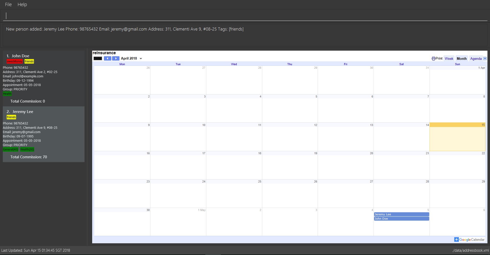

By: T11-B3 Since: Jan 2018 Licence: MIT
- 1. Introduction
- 2. Quick Start
- 3. Features
- 3.1. Viewing help :
help - 3.2. Adding a person:
add - 3.3. Listing all persons :
list - 3.4. Getting count of reInsurance size :
count - 3.5. Editing a person :
edit - 3.6. Locating persons by name:
find - 3.7. Locating persons by tag:
findtag - 3.8. Deleting a person :
delete - 3.9. Selecting a person :
select - 3.10. Listing entered commands :
history - 3.11. Undoing previous command :
undo - 3.12. Redoing the previously undone command :
redo - 3.13. Sorting all entries :
sort - 3.14. Clearing all entries :
clear - 3.15. Export data :
export - 3.16. Group entries :
group - 3.17. Password :
password - 3.18. Exiting the program :
exit - 3.19. Saving the data
- 3.1. Viewing help :
- 4. FAQ
- 5. Command Summary
1. Introduction
reInsurance is for those who prefer to use a desktop app for managing contacts. More importantly, reInsurance is optimized for those who prefer to work with a Command Line Interface (CLI) while still having the benefits of a Graphical User Interface (GUI). If you can type fast, reInsurance can get your contact management tasks done faster than traditional GUI apps. Interested? Jump to the Section 2, “Quick Start” to get started. Enjoy!
2. Quick Start
-
Ensure you have Java version
1.8.0_60or later installed in your Computer.Having any Java 8 version is not enough.
This app will not work with earlier versions of Java 8. -
Download the latest
reInsurance.jarhere. -
Copy the file to the folder you want to use as the home folder for your reInsurance application.
-
Double-click the file to start the app. The GUI should appear in a few seconds.
 -
Type the command in the command box and press Enter to execute it.
e.g. typinghelpand pressing Enter will open the help window. -
Some example commands you can try:
-
list: lists all contacts -
addn/John Doe p/98765432 e/johnd@example.com a/John street, block 123, #01-01 b/09-09-1995: adds a contact namedJohn Doeto the reInsurance. -
delete3: deletes the 3rd contact shown in the current list -
exit: exits the app
-
-
Refer to Section 3, “Features” for details of each command.
3. Features
Command Format
-
Words in
UPPER_CASEare the parameters to be supplied by the user e.g. inadd n/NAME,NAMEis a parameter which can be used asadd n/John Doe. -
Items in square brackets are optional e.g
n/NAME [t/TAG]can be used asn/John Doe t/friendor asn/John Doe. -
Items with
… after them can be used multiple times including zero times e.g.[t/TAG]…can be used ast/friend,t/friend t/familyetc. -
Parameters can be in any order e.g. if the command specifies
n/NAME p/PHONE_NUMBER,p/PHONE_NUMBER n/NAMEis also acceptable.
3.1. Viewing help : help
Format: help, Alias: h
The help page can be accessed by moving the mouse over Help section of the navigation bar then clicking Help. The help page can also be accessed by pressing F1 on the keyboard.
|
3.2. Adding a person: add
Adds a person to reInsurance
Format: add n/NAME p/PHONE_NUMBER e/EMAIL a/ADDRESS b/BIRTHDAY [d/APPOINTMENT] [t/TAG] [i/INSURANCE[COMMISSION]] [g/GROUP] … Alias: a
| A person can have any number of tags, appointment and insurance plans (including 0) but only one group Dates are in the format dd-mm-yyyy |
Examples:
-
add n/John Doe p/98765432 e/johnd@example.com a/311, Clementi Ave 2, #02-25 b/09-12-1994 d/05-05-2018 g/PRIORITY t/friends i/Health -
`add n/Betsy Crowe t/friend e/betsycrowe@example.com a/Newgate Prison p/1234567 b/29-10-1992 g/friends t/criminal i/General `
3.2.1. Adding an insurance: Prefix: "i/"
Add one or more insurance to a person
Format: i/INSURANCE[COMMISSION]
| A person can have any number of insurances, to add in the commission of a particular insurance simply put the amount immediately after the insurance name and inside a '[]' or a '{}' bracket. |
Examples:
-
add n/Jeremy Lee p/82286918 e/sebry9@gmail.com a/311, Clementi Ave 2, #02-25 b/09-12-1994 i/Health[10] i/General{20}
3.3. Listing all persons : list
Shows a list of all persons in reInsurance.
Format: list Alias: l
3.4. Getting count of reInsurance size : count
Returns the number of client in reInsurance
Format: count
3.5. Editing a person : edit
Edits an existing person in the reInsurance.
Format: edit INDEX [n/NAME] [p/PHONE] [e/EMAIL] [a/ADDRESS] [b/BIRTHDAY] [d/APPOINTMENT] [t/TAG] [i/INSURANCE]… Alias: e
Examples:
-
edit 1 p/91234567 e/johndoe@example.com
Edits the phone number and email address of the 1st person to be91234567andjohndoe@example.comrespectively. -
edit 2 n/Betsy Crower t/
Edits the name of the 2nd person to beBetsy Crowerand clears all existing tags.
Clearing the application can also be done by moving the mouse over File section of the navigation bar then clicking Clear.
|
3.6. Locating persons by name: find
Finds persons whose names contain any of the given keywords.
Format: find KEYWORD [MORE_KEYWORDS] Alias: f
Examples:
-
find John
ReturnsjohnandJohn Doe -
find Betsy Tim John
Returns any person having namesBetsy,Tim, orJohn
3.7. Locating persons by tag: findtag
Finds persons whose names contain any of the given tags.
Format: findtag KEYWORD [MORE_KEYWORDS]
Examples:
-
find Friends
Returns any person having tagFriends -
find Friends Colleagues Neighbours
Returns any person having tagsFriends,Colleagues, orNeighbours
3.8. Deleting a person : delete
Deletes the specified person from reInsurance.
Format: delete INDEX Alias: d
Examples:
-
list
delete 2
Deletes the 2nd person in the reInsurance. -
find Betsy
delete 1
Deletes the 1st person in the results of thefindcommand.
3.9. Selecting a person : select
Selects the person identified by the index number used in the last person listing.
Format: select INDEX Alias: s
Examples:
-
list
select 2
Selects the 2nd person in reInsurance. -
find Betsy
select 1
Selects the 1st person in the results of thefindcommand.
3.10. Listing entered commands : history
Lists all the commands that you have entered in reverse chronological order.
Format: history
|
Pressing the ↑ and ↓ arrows will display the previous and next input respectively in the command box. |
3.11. Undoing previous command : undo
Restores reInsurance to the state before the previous undoable command was executed.
Format: undo Alias: u
|
Undoable commands: those commands that modify reInsurance’s content ( |
Examples:
-
delete 1
list
undo(reverses thedelete 1command) -
select 1
list
undo
Theundocommand fails as there are no undoable commands executed previously. -
delete 1
clear
undo(reverses theclearcommand)
undo(reverses thedelete 1command)
3.12. Redoing the previously undone command : redo
Reverses the most recent undo command.
Format: redo Alias: r
Examples:
-
delete 1
undo(reverses thedelete 1command)
redo(reapplies thedelete 1command) -
delete 1
redo
Theredocommand fails as there are noundocommands executed previously. -
delete 1
clear
undo(reverses theclearcommand)
undo(reverses thedelete 1command)
redo(reapplies thedelete 1command)
redo(reapplies theclearcommand)
3.13. Sorting all entries : sort
Sort all entries from reInsurance by given condition in lexicographical order.
Format: sort
3.14. Clearing all entries : clear
Clears all entries from reInsurance.
Alias: c
Format: clear Alias: c
Clearing all entries from reInsurance can also be done by moving the mouse over File section of the navigation bar then clicking Clear.
|
3.15. Export data : export
Exports the data from the specified export type (case insensitive).
Format: export EXPORT_TYPE
** The EXPORT_TYPE must be either calendar or portfolio.
Exports the portfolio to a specified export location.
Format export portfolio FILENAME.
Examples:
-
export calendar
Exports the data on the calendar to Google Calendar-
When running this command, you will be prompted to enter your credentials to your Google Account.
-
-
export portfolio
Exports the data in the portfolio to aportfolio.csvfile. -
export portfolio my_data
Exports the data in the portfolio to amy_data.csvfile.
|
3.16. Group entries : group
Group all entries under the same group from reInsurance.
Format: group Alias: g
Examples:
-
group friends
All entries under the group friends will be returned to the user as a list.
3.17. Password : password
Set a password for reInsurance as desired. No password required to access the program when using for the first time.
Format: password
Examples:
-
password set/yourpassword
Password will be set as yourpassword. -
password change/yournewpassword
Password will be changed to yournewpassword. -
password remove/yourexistingpassword
Password will be removed.
|
3.18. Exiting the program : exit
Exits the program.
Format: exit
Exiting the application can also be done by moving the mouse over File section of the navigation bar then clicking Exit.
|
3.19. Saving the data
reInsurance data are saved in the hard disk automatically after any command that changes the data.
There is no need to save manually. Data will be encrypted.
| The standard version of the JRE/JDK are under export restrictions. That also includes that some cryptographic algorithms are not allowed to be shipped in the standard version. Replace files in library with Java Cryptography Extension (JCE) Unlimited Strength Jurisdiction Policy Files 8. Download the files Here. |
4. FAQ
Q: How do I transfer my data to another Computer?
A: Install the app in the other computer and overwrite the empty data file it creates with the file that contains the data of your previous reInsurance folder.
5. Command Summary
-
Add
add n/NAME p/PHONE_NUMBER e/EMAIL a/ADDRESS [t/TAG]…
e.g.add n/James Ho p/22224444 e/jamesho@example.com a/123, Clementi Rd, 1234665 b/09-09-1995 t/friend t/colleague -
Clear :
clear -
Delete :
delete INDEX
e.g.delete 3 -
Edit :
edit INDEX [n/NAME] [p/PHONE_NUMBER] [e/EMAIL] [a/ADDRESS] [t/TAG]…
e.g.edit 2 n/James Lee e/jameslee@example.com -
Find :
find KEYWORD [MORE_KEYWORDS]
e.g.find James Jake -
List :
list -
Help :
help -
Select :
select INDEX
e.g.select 2 -
History :
history -
Undo :
undo -
Redo :
redo -
Export :
export -
Sort :
sort -
Group :
group
e.g.group priority -
Password :
password
e.g.password set/123